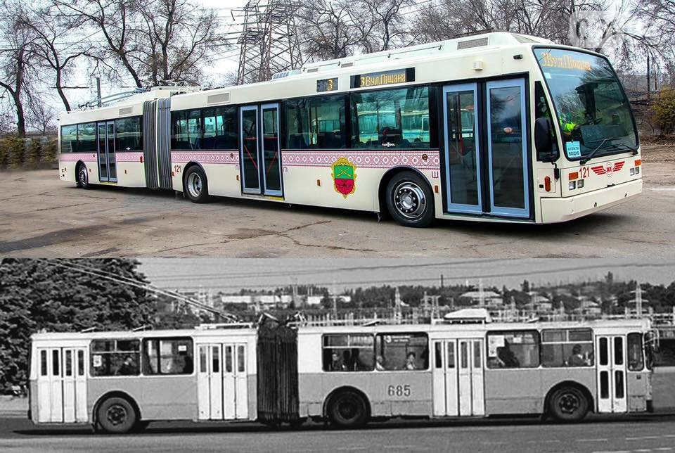

Тролейбус Van Hool вийшов на лінію
19 листопада підприємство «Запоріжелектротранс» випустило для роботи на лінію перший європейський тролейбус Van Hool. читати більше
Тролейбус має довжину 18 метрів, обладнаний двома кондиціонерами та системою опалення. Завдяки наявності дизельного двигуна тролейбуси такого типу можуть пересуватися автономним ходом, без контактної мережі. Це необхідно, наприклад, у випадку пориву контактної мережі. Водії тролейбуса (на міських пасажирських маршрутах) підприємства для освоєння нової техніки проходили навчання та стажування у м. Івано-Франківськ.
Тролейбус працюватиме на маршруті №3 «Вул. Піщана – 4-й Південний мікрорайон». Всього очікується
отримати 9 таких тролейбусів. Раніше нашим містом вже їздили гармошки радянського виробництва 20
листопада 2019.
посиланячко
на новину